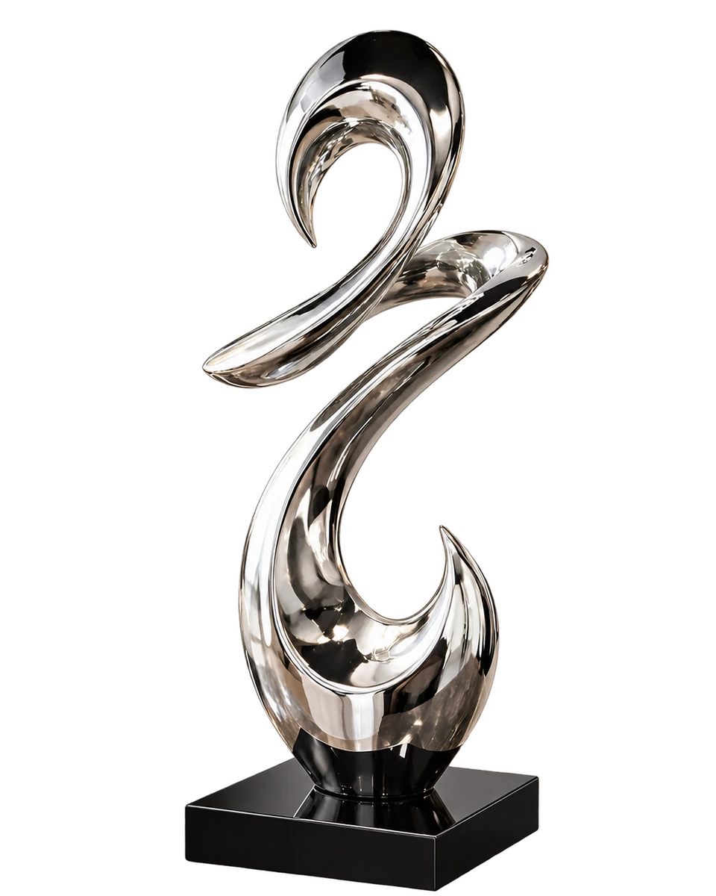
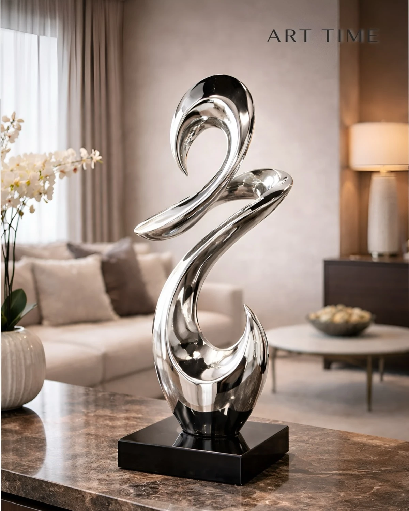
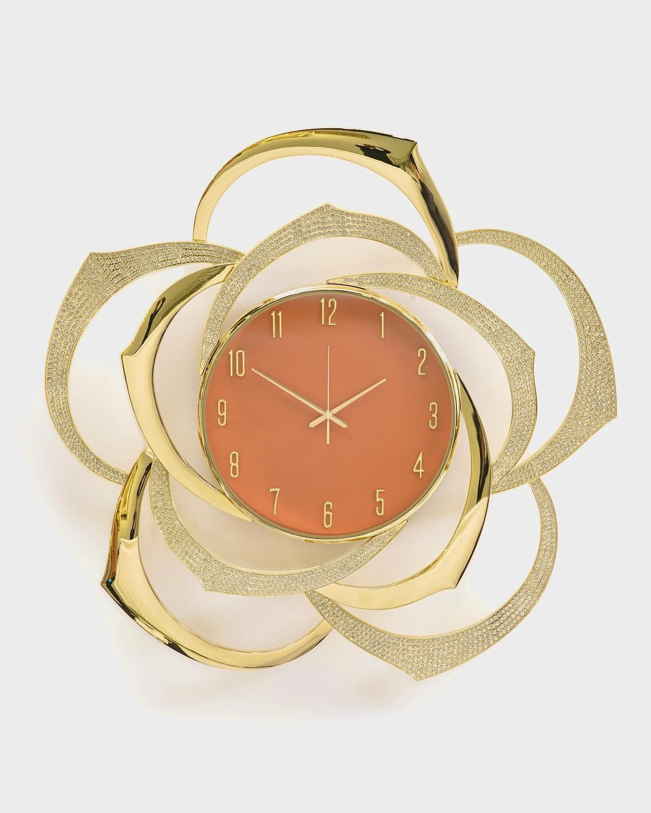
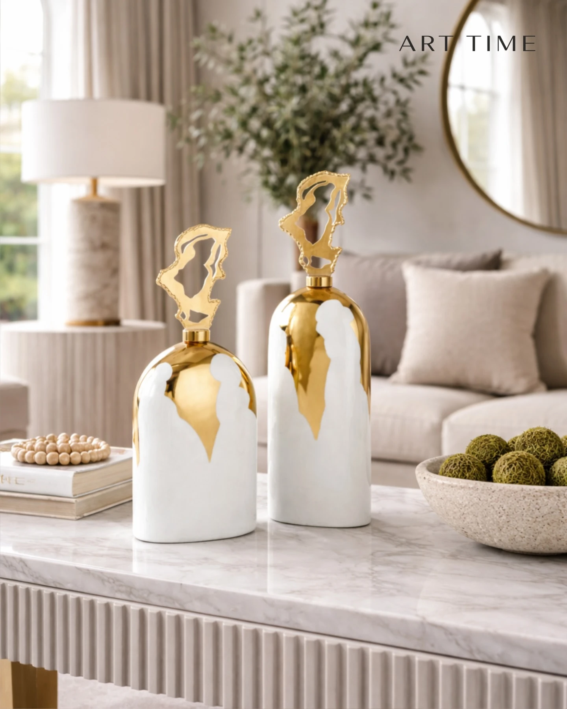
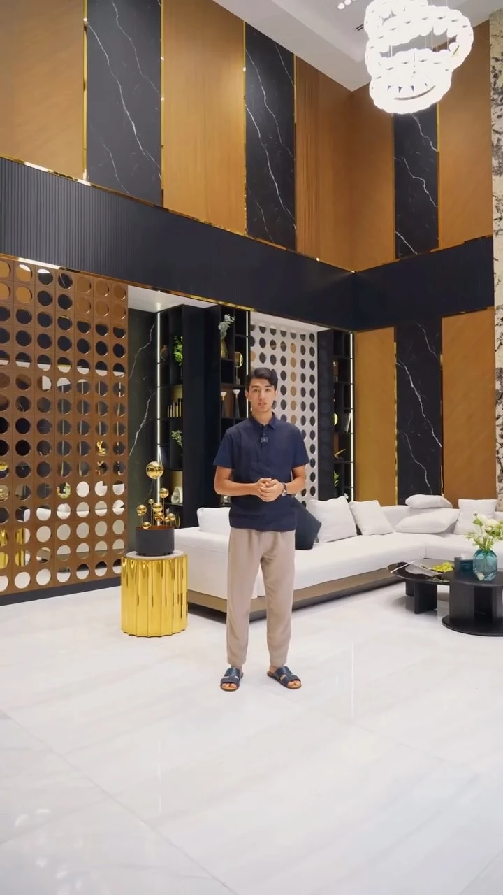
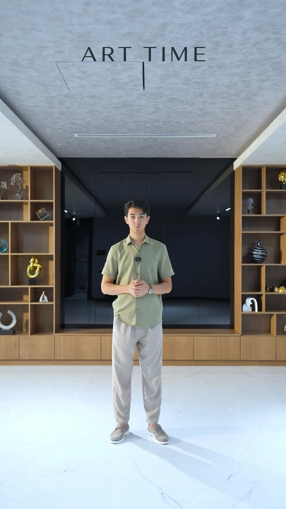
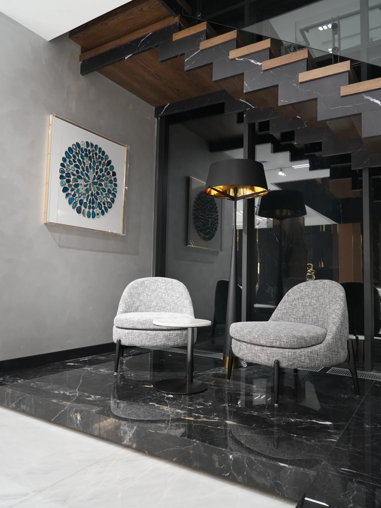

Картина Modern
Цена по запросу
Описание и детали
Бирюзовые формы в светлой раме. Ручная работа; алюминиевый каркас.
Размер и исполнение уточним при обращении.
Уточнить наличие
Уточнить по телефону ↗Картины, часы, вазы и арт-объекты. Предметы, которые задают характер пространству.

Арт-объект
с плавным силуэтом
От одного выразительного объекта — к целой композиции. Выберите категорию и рассмотрите предметы.

Картины, часы, вазы, арт-объекты и композиции. Стоимость и наличие уточняются при обращении.
16 предметов
Цена по запросу
Бирюзовые формы в светлой раме. Ручная работа; алюминиевый каркас.
Размер и исполнение уточним при обращении.
Уточнить наличие
Уточнить по телефону ↗
Цена по запросу
Светлый береговой пейзаж в раме. Ручная работа.
160 × 80 см. Ручная работа, рама из пластика.
Уточнить наличие
Уточнить по телефону ↗
Цена по запросу
Оранжевый циферблат и выразительная металлическая форма.
Диаметр 90 см. Бесшумный механизм.
Уточнить наличие
Уточнить по телефону ↗
Цена по запросу
Контрастный круглый циферблат для современного интерьера.
Диаметр 50 см. Металлический корпус.
Уточнить наличие
Уточнить по телефону ↗
Цена по запросу
Деревянная рама, светлый циферблат и крупные арабские цифры.
Размеры и исполнение уточним при обращении.
Уточнить наличие
Уточнить по телефону ↗
Цена по запросу
Декоративный набор из часов и парных подсвечников на полке коллекции Art Time.
Размеры и состав набора уточним при обращении.
Уточнить наличие
Уточнить по телефону ↗
Цена по запросу
Классические напольные часы в деревянном корпусе из витрины Art Time.
Размеры и механизм уточним при обращении.
Уточнить наличие
Уточнить по телефону ↗
Цена по запросу
Сочетание стеклянного сосуда и оранжевых цветов в светлом интерьере.
Муранское стекло, ручная работа. Размеры и состав композиции уточним.
Уточнить наличие
Уточнить по телефону ↗
Цена по запросу
Зелёно-янтарный градиент и вытянутый силуэт, показанные в интерьерной сцене бренда.
Муранское стекло, ручная работа.
Уточнить наличие
Уточнить по телефону ↗
Цена по запросу
Парные декоративные сосуды с фигурными верхними элементами.
Размеры, материал и состав пары уточним при обращении.
Уточнить наличие
Уточнить по телефону ↗
Цена по запросу
Два вытянутых стеклянных силуэта в зелёно-янтарной гамме.
Муранское стекло, ручная работа. Предметы и комплектацию подберём отдельно.
Уточнить наличие
Уточнить по телефону ↗
Цена по запросу
Бирюзовый сосуд с декоративной металлической крышкой.
46 × 17 см. Хрусталь, металлическая крышка.
Уточнить наличие
Уточнить по телефону ↗
Цена по запросу
Меньший вариант бирюзового сосуда из той же пары на фото.
37 × 15 см. Хрусталь, металлическая крышка.
Уточнить наличие
Уточнить по телефону ↗Цена по запросу
Полированная металлическая форма на тёмном основании.
Размеры и материал уточним при обращении.
Уточнить наличие
Уточнить по телефону ↗
Цена по запросу
Серебристая спиральная форма рядом с фактурным вертикальным элементом.
Размеры и состав композиции уточним при обращении.
Уточнить наличие
Уточнить по телефону ↗
Цена по запросу
Широкая ваза со светлыми и оранжевыми цветами, показанная в ассортименте Art Time.
Размеры и состав композиции уточним при обращении.
Уточнить наличие
Уточнить по телефону ↗Попробуйте другую категорию или название.
Бирюзовый сосуд с декоративной металлической крышкой.
46 × 17 см. Хрусталь, металлическая крышка.
37 × 15 см. Хрусталь, металлическая крышка.
Рассмотреть предмет ↗Зелёно-янтарный градиент и вытянутый силуэт, показанные в интерьерной сцене бренда.
Ваза из муранского стекла ↗Картины, декор и композиции в интерьерах. Работа Art Time — подбор и наполнение пространства.

Подбор предметов для входной зоны, холла, лестницы, зала, кухни и других комнат.

Картина, парный настенный декор и цветы объединили интерьерную композицию.

Подбор большой картины, хрустальной вазы и цветов, фруктового сосуда и салфетницы.

Подобраны декор для ниш, цветочная композиция и акценты для пространства.

Бренд показал наполнение минус первого этажа и завершённый интерьер.
Примеры сочетания предметов и пространства от Art Time.

Опубликованная интерьерная сцена о подборе наполнения под характер пространства. Авторство ремонта не заявлено.

Золотистая стойка, высокий растительный силуэт и тёмная стена в примере бренда.
Начните с одного предмета или расскажите о комнате. Обсудим подходящий формат работы.
Учитываем пространство, цвета, мебель и пропорции. Подбираем картины, часы, вазы и аксессуары так, чтобы они стали частью общей композиции.
Обсудить подбор ↗Специалист может приехать и подобрать детали на месте. Расскажите о комнате и задаче — согласуем формат встречи и условия.
Обсудить подбор ↗Доставим выбранные предметы и поможем разместить их в интерьере. Маршрут, сроки и условия обсуждаем при обращении.
Обсудить подбор ↗Да. Подбор учитывает пространство, стиль, цвета и пропорции. Можно начать с одного акцента или обсудить наполнение комнаты.
Выберите предмет и подготовьте запрос или позвоните. Актуальную стоимость, размеры и наличие уточним перед заказом.
Art Time находится в Ташкенте, на улице Тимура Малика, 3А. Перед визитом позвоните, чтобы согласовать встречу.
Подбор, доставка и размещение входят в направления работы Art Time. Условия для вашего пространства согласуем отдельно.
Расскажите о пространстве и предмете, который ищете. Подготовьте текст обращения и свяжитесь с Art Time удобным способом.
Подготовить запросТекст готовится на вашем устройстве. Его можно изменить, скопировать или сохранить.